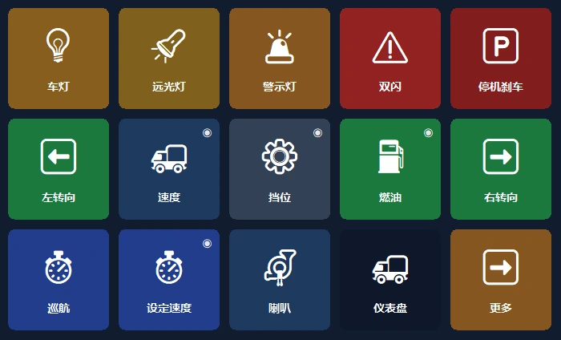
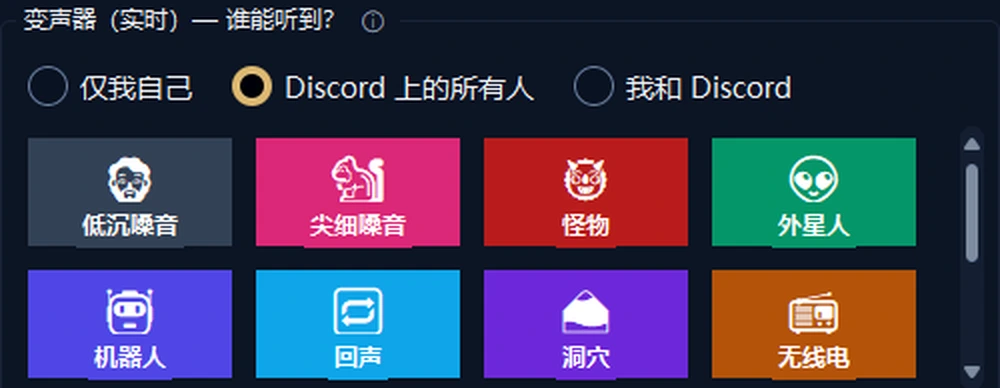
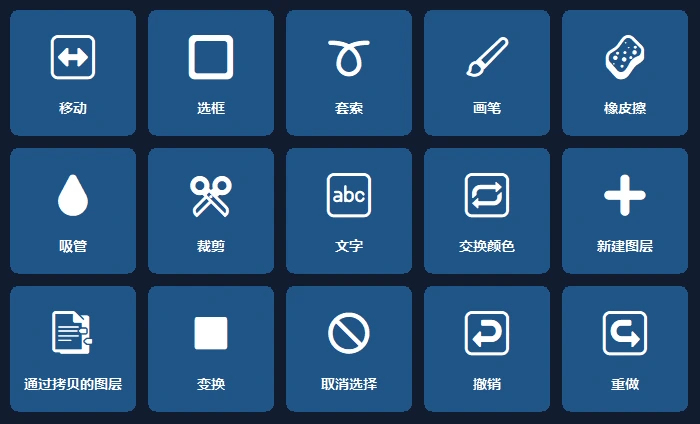
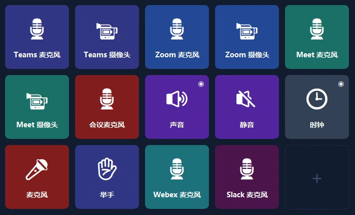

你的手机，就是电脑的控制面板。
一键快捷键、OBS、Discord、Spotify 和游戏面板。支持 USB、Wi‑Fi 或移动数据连接，端到端加密。
你的卡车仪表盘，现在就在手机上。
实时显示车速、转速、油量和逼真的指示灯；卡车操作一键完成。
- 🚦真实的仪表盘车速、限速、转速、油量和预计到达时间；指示灯和游戏中一样亮起。
- 🕹一键操作车灯、驻车制动、定速巡航；一键向左或向右看。
- 📳无需设置启动游戏时，手机会推荐现成的面板，之后每次都会自动切换过去。

单手掌控直播。
用手机代替昂贵的设备：OBS、音效、Discord 和音乐尽在一屏。
- 🎬OBS 控制场景、录制与推流，计时器直接显示在按键上。
- 📳音效面板与音乐播放现成音效，在同一屏控制 Spotify 和各个应用的音量。
- 🎙变声工作室自然的女声、男声、童声，或你自己的声音；一键关闭 Discord 麦克风。


打开程序，面板已经就绪。
面板基于 Photoshop、Premiere Pro、After Effects、Illustrator、DaVinci Resolve、Blender、Figma 和 VS Code 的官方快捷键。
- ✨无需设置程序切到前台时，手机会推荐对应面板，之后自动切换过去（Pro）。
- ⌨正确的快捷键工具、图层、撤销、标记：均使用各程序的标准快捷键。
麦克风一键掌控。
无需设置快捷键，即可在 Teams、Zoom、Meet、Webex 和 Slack 中关闭麦克风，即使会议窗口在后台也可以。
- 🎙只影响该程序Windows 只会静音会议程序的麦克风；其他程序不受影响。
- 🔴状态一目了然麦克风关闭期间，按键指示灯保持红色；免费版也包含此功能。

你桌面上最实用的屏幕。
一分钟用现成布局上手；你的程序会自动显示真实图标。
第二屏幕
在手机上查看电脑屏幕，并把它当作触控鼠标和键盘使用。
应用音量
单独调节每个程序的音量；耳机 ↔ 扬声器一键切换。
智能页面
页面跟随当前程序切换；支持计时器、文件夹和多步操作。
随处连接
无需同一 Wi‑Fi：移动数据也能用，还支持多台电脑。
加密云备份
布局无需账号即可加密保存，在新电脑上一键恢复。
隐私
无需账号，没有广告，没有追踪。按键只保存在你的设备上。
一分钟就绪。
安装程序
免费下载 Windows 版 PanelDeck 并打开。
扫描二维码
手机应用扫描二维码，几秒即可连接。
开始使用
选择现成布局，或创建你自己的按键。
一次付费，永久使用。
无订阅、无广告、无追踪。包含所有更新。Google Play 会显示你所在国家的本地价格。
免费版
- 通过 USB、Wi‑Fi 和移动数据连接
- 第一页 6 个按键
- 快捷键、媒体、启动程序、Discord、计时器
PanelDeck Pro
首发价；之后 6.99 美元。免费试用 7 天。
- 6 个标签页，文件夹和按键不限数量
- 第二屏幕、音量滑块、实时信息
- 卡车面板、变声工作室、打开程序时自动显示面板
- 加密云备份
你需要知道的
需要注册账号吗？
不需要。PanelDeck 不要求账号；你的按键只保存在你的设备上。
出门在外也能用吗？
能。不在同一 Wi‑Fi 时，手机会通过移动数据以端到端加密方式连接。
支持哪些游戏？
完整支持 Euro Truck Simulator 2 和 American Truck Simulator。赛车和飞行模拟器的实时面板处于测试阶段。
有 iPhone 版吗？
目前仅支持 Android。iPhone 和 iPad 版本已在计划中。
Windows 提示“Windows 已保护你的电脑”，怎么办？
点击“更多信息”→“仍要运行”。详见安装指南。